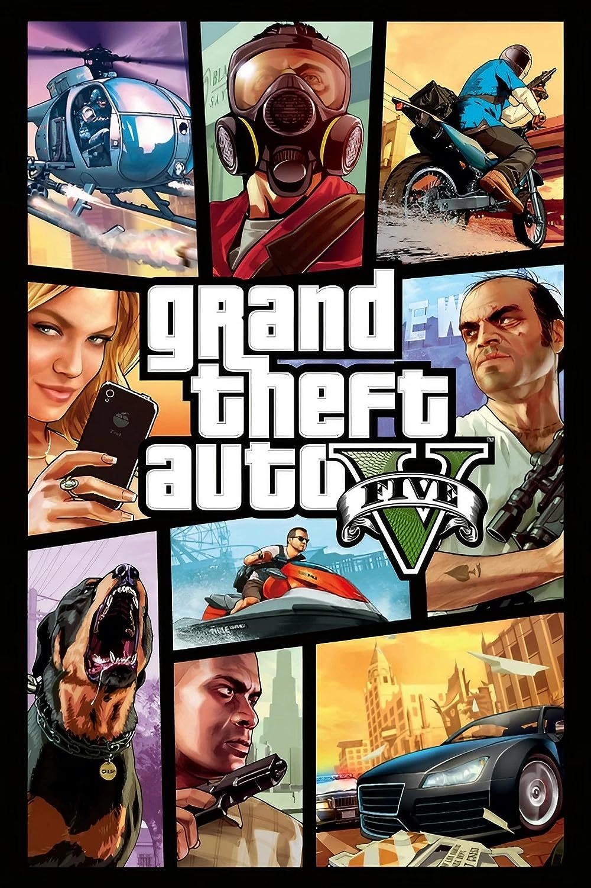
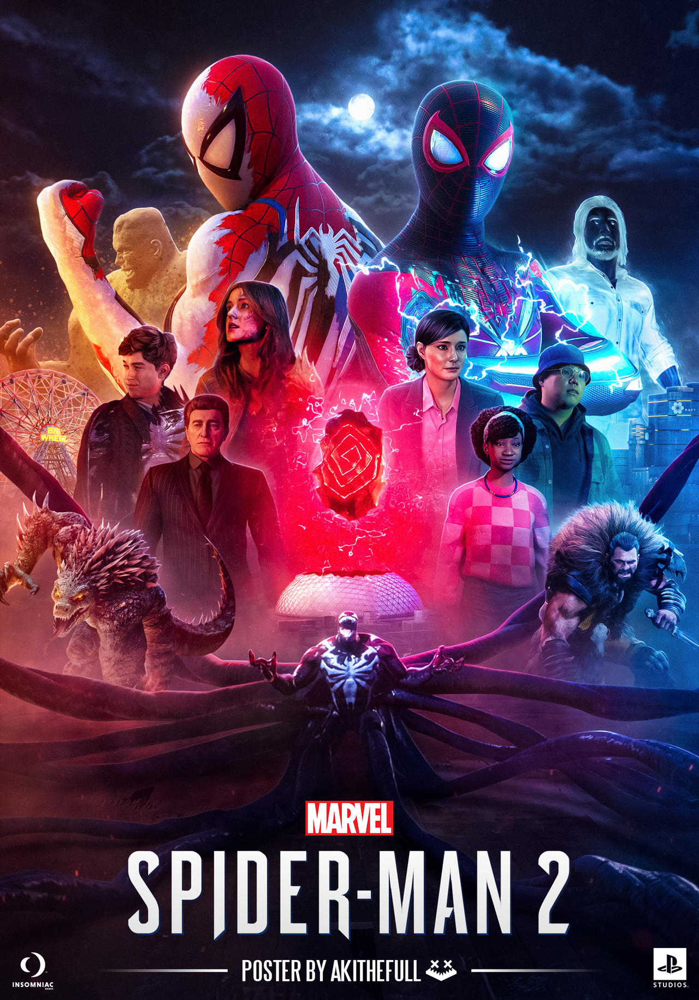
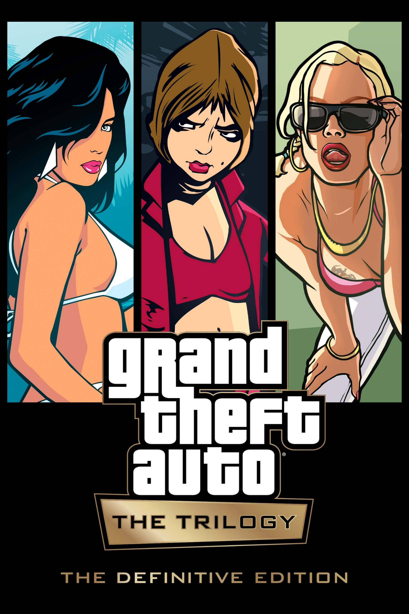

Grand theft auto 5
Price: ₱1250
Grand Theft Auto V is a 2013 action-adventure game developed by Rockstar North and published by Rockstar Games. It is the seventh main entry in the Grand Theft Auto series, following 2008's Grand Theft Auto IV, and the fifteenth instalment overall. Set within the fictional state of San Andreas, based on Southern California, the single-player story follows three protagonists—retired bank robber Michael De Santa (Ned Luke), street gangster Franklin Clinton (Shawn Fonteno), and drug dealer and gunrunner Trevor Philips (Steven Ogg), and their attempts to commit heists while under pressure from a corrupt government agency and powerful criminals. Players freely roam San Andreas's open world countryside and fictional city of Los Santos, based on Los Angeles.
Far Cry 6

Price: ₱1300
In Far Cry 6 players take on the role of Dani, a former soldier trying to flee the authoritarian rule of dictator Antón Castillo. Along the way, Dani encounters the rebel group Libertad, and reluctantly joins their ranks before recruiting allies to their cause and eventually overthrowing Castillo. This presented the narrative team with a few challenges: First, Dani starts the game as a civilian, and needed to become a guerrilla hero. How is that evolution portrayed when the player can tackle missions in any order they like? Second, the world itself needed to tell a story, and the island nation of Yara needed to come across as a country in the middle of a revolution. Third, Antón and his son Diego needed to be present in the story, and Dani’s actions needed to impact them. However, since Dani begins the game as a civilian, it didn’t make sense that they would encounter the dictator frequently. So how could the narrative showcase the Castillos without making them cross paths with Dani?
God of war Ragnarok

Price: ₱1900
Price: ₱1900
The sequel to the 2018 Sony Santa Monica title, God of War Ragnarok is the next chapter in the story of Kratos and his growing son Atreus as they prepare for the titular cataclysm that threatens to be unleashed upon not just the Norse lands of Midgard, but all of the nine realms.
Spider-Man 2
Price: ₱3500
Marvel's Spider-Man 2 is a 2023 action-adventure game developed by Insomniac Games and published by Sony Interactive Entertainment. It is based on the Marvel Comics character Spider-Man, and features a i by its long-running comic book mythology which is also derived from various adaptations in other media. It is the third entry in the Marvel's Spider-Man series, acting as a sequel to Marvel's Spider-Man (2018) and a follow-up to Marvel's Spider-Man: Miles Morales (2020). In this installment, Peter Parker and Miles Morales struggle to navigate the next steps in their personal lives while combating several new threats, including a private militia led by Kraven the Hunter, who transforms New York City into a hunting ground for super-powered individuals; and the extraterrestrial Venom symbiote, which bonds itself to Parker and negatively influences him, threatening to destroy his personal relationships.
Grand Theft Auto Definitive Edition
Price ₱1200
Grand Theft Auto: The Trilogy – The Definitive Edition is a 2021 compilation of three action-adventure games in the Grand Theft Auto series: Grand Theft Auto III (2001), Grand Theft Auto: Vice City (2002), and Grand Theft Auto: San Andreas (2004). It was developed by Grove Street Games[a] and published by Rockstar Games. All three games are remastered, with visual enhancements and gameplay upgrades.